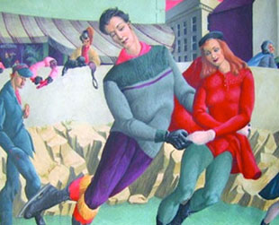

Current Exhibitions
Members Collect: The Thrill of the Chase
October 16, 2010 – March 20, 2011
Unless one is an intimate friend, it is not often that the opportunity arises to view prize possessions from very private collections. But that is exactly what the Lyman Allyn Art Museum is going to do with upcoming exhibition Members Collect: The Thrill of the Chase. It will feature extraordinary works of art from the collections of Museum members who live in the region of New London, Connecticut east to Westerly, Rhode Island. Landscapes, portraiture, still life…abstract, expressionist, realistic…paintings, sculpture, multi-media. – captivating pieces from impassioned collectors.
American Stories
Ongoing Exhibit
 This ongoing and evolving exhibition drawn from the Lyman Allyn's permanent collection presents a broad range of American art featuring painting, works on paper, sculpture, and decorative arts from the eighteenth through the twentieth centuries.
This ongoing and evolving exhibition drawn from the Lyman Allyn's permanent collection presents a broad range of American art featuring painting, works on paper, sculpture, and decorative arts from the eighteenth through the twentieth centuries.
Our exhibitions have been funded in part by generous grants from the Frank Loomis Palmer Fund, Bank of America, Trustee and the Connecticut Humanities Council, with support from the Connecticut Commission on Culture and Tourism.
For information on the Museum Exhibitions, contact: Dr. Nancy Stula, Director and Curator, Lyman Allyn Art Museum. For general information, please email us at info@lymanallyn.org